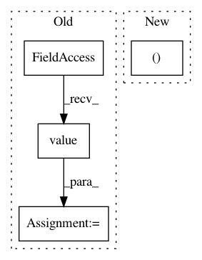

b53f2d7d650106a2ff175c2146b4ab897a3389d7,gpytorch/lazy/lazy_tensor.py,LazyTensor,diagonalization,#LazyTensor#Any#,1333
Before Change
// from ..utils.lanczos import lanczos_tridiag, lanczos_tridiag_to_diag
from ..lazy import lazify
qmat, tmat = gpytorch.utils.lanczos.lanczos_tridiag(
self.matmul,
max_iter=settings.max_root_decomposition_size.value(),
dtype=self.dtype,
device=self.device,
matrix_shape=self.shape[-2:],
batch_shape=self.batch_shape,
)
evals, q_t = gpytorch.utils.lanczos.lanczos_tridiag_to_diag(tmat)
evecs = lazify(qmat @ q_t)
elif method == "symeig":
After Change
from ..lazy import lazify
func = Diagonalization()
evals, evecs = func.apply(
self.representation_tree(),
self.device,
self.dtype,
In pattern: SUPERPATTERN
Frequency: 3
Non-data size: 4
Instances
Project Name: cornellius-gp/gpytorch
Commit Name: b53f2d7d650106a2ff175c2146b4ab897a3389d7
Time: 2021-02-22
Author: wjm363@nyu.edu
File Name: gpytorch/lazy/lazy_tensor.py
Class Name: LazyTensor
Method Name: diagonalization
Project Name: reinforceio/tensorforce
Commit Name: ee950b503eeed5aca3747a4bcf2a40f624b743a0
Time: 2019-01-21
Author: alexkuhnle@t-online.de
File Name: tensorforce/core/optimizers/multi_step.py
Class Name: MultiStep
Method Name: tf_step
Project Name: reinforceio/tensorforce
Commit Name: ee950b503eeed5aca3747a4bcf2a40f624b743a0
Time: 2019-01-21
Author: alexkuhnle@t-online.de
File Name: tensorforce/core/optimizers/synchronization.py
Class Name: Synchronization
Method Name: tf_step